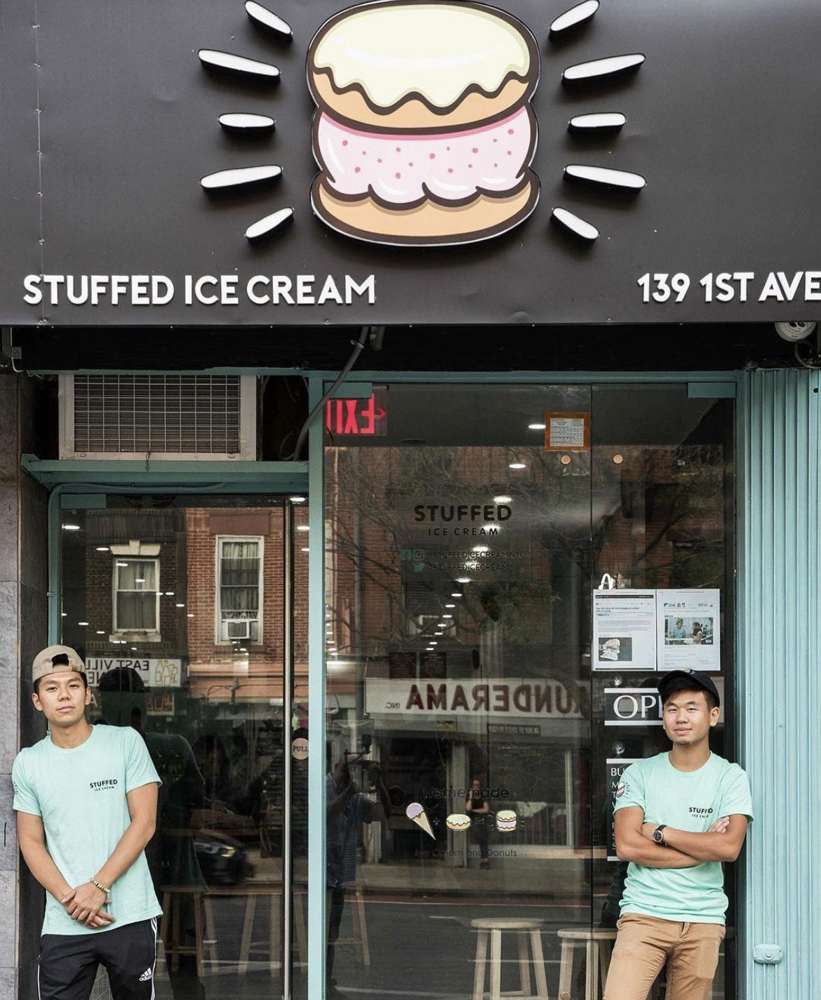

About Us
This is a story all about how our ice cream got flipped turned upside down and I'd like to take a minute so scoop on by I'll tell you how we became "That’s the Stuff" started by two guys.
With little to no culinary background, besides the occasional cup noodles here and there, owners Jackie and Alan were able to whip up some "spot on" flavors and fillings along with warm fluffy donuts. We strive for every single flavor to taste true to their name. After months of extensive research and experimentation, we perfected deserts filled with delicious ingredients so you can say, “That’s the Stuff!”
